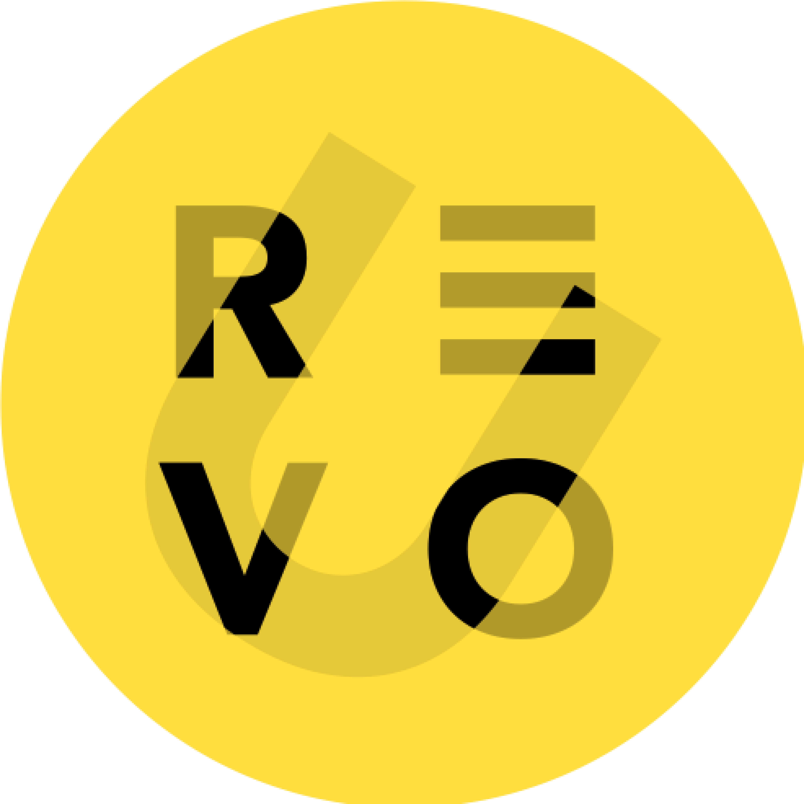
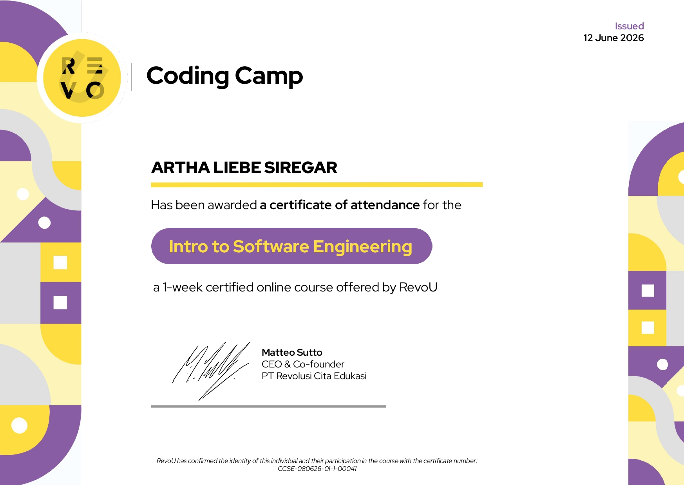

Hi, I'm Artha Liebe Siregar
Information Systems Student | Systems & Digital Solutions Enthusiast | Lifelong Learner
Information Systems Student | Systems & Digital Solutions Enthusiast | Lifelong Learner
I am driven by turning complex problems into clear, well-designed solutions. My studies have equipped me with hands-on experience in analyzing business processes, designing system architectures, and building object-oriented applications, while crafting interfaces that put users first. My work consistently bridges how systems function with how people actually use them. I am eager to bring this analytical and technical foundation into an environment that fosters continuous learning and meaningful impact.

The website you're viewing right now — built from scratch with vanilla HTML, CSS, and JavaScript to practice semantic markup, responsive layout, and interactive UI patterns like tab switchers and scroll animations.

A web-based app to help users track expenses and visualize their budget, built during CodingCamp (8 June 2026). Developed individually using HTML, CSS, and JavaScript with a focus on clean data visualization and responsive UI.

A UI/UX project addressing Indonesia's child immunization gap, helping parents track schedules and monitor growth. Group project (5 members) — my role covered user research, HMW synthesis, UI style guide, and high-fidelity Figma prototyping, validated at 95.8% task success rate.

A system analysis and design project for a web-based clinic system covering queue registration, digital medical records, and automated sick leave notifications. Group project (5 members) — my role focused on Use Case scenarios, Use Case diagrams, and BPMN modelling.

An OOP pair programming project extending an academic simulator with a transcript generator that displays course history chronologically and handles repeated courses in GPA calculation. My role covered class structure design and sorting/filtering logic — validated with a 100/100 autograded result.
Student Executive Board (BEM), Institut Teknologi Del
• Managed and maintained organizational data.
• Collaborated with team members to ensure accurate information management and effective communication.
Del English Club (DEC), Institut Teknologi Del
• Participated in English learning activities and group discussions.
• Improved English communication skills through interactive sessions and collaborative learning.
Institut Teknologi Del
Studying Information Systems with a strong interest in software engineering, systems analysis, and digital solutions. Continuously developing technical and analytical skills through academic projects, collaborative learning, and hands-on experience with modern technologies.
SMA Cahaya Medan
Studied in the Natural Sciences (IPA) program, strengthening analytical thinking and problem-solving skills through mathematics and science courses. Outside the classroom, actively participated in the school's dance club and represented the school in dance competitions, gaining valuable experience in collaboration, commitment, and performance under pressure.

RevoU

Successfully completed a 1-week online coding camp by RevoU covering software engineering fundamentals, HTML, CSS, JavaScript, and introductory web development concepts.
Have a question, an opportunity, or just want to say hi? Feel free to reach out.